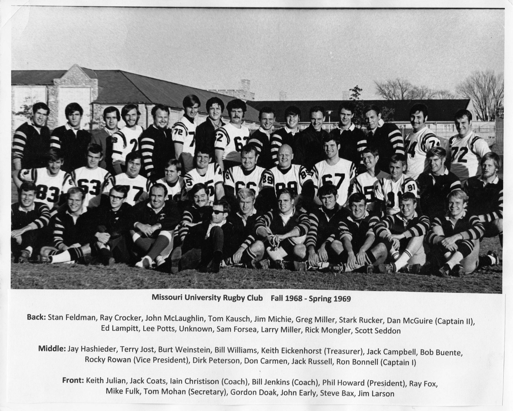
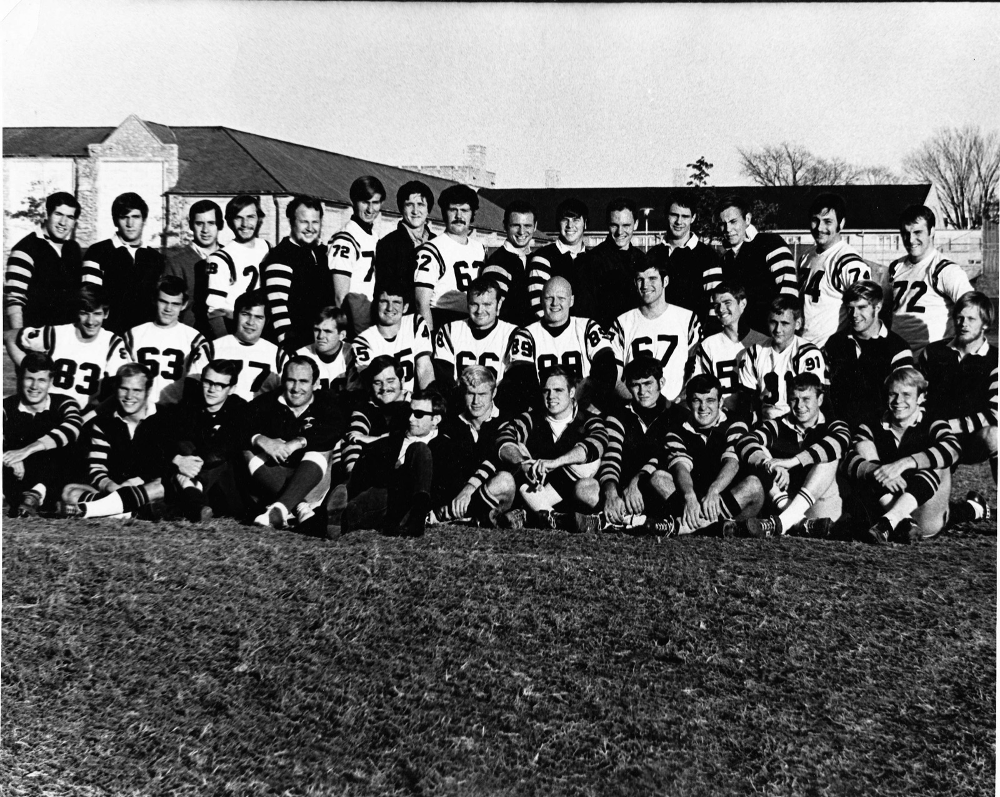

Mizzou Rugby Season Archive
Fall 1968: Three Sides Undefeated · Heart of America Champions
Three undefeated sides and a tournament championship.
By the fall of 1968 the Missouri University Rugby Club had become a Midwest collegiate powerhouse, fielding three undefeated sides. The best weekend of the year was the inaugural Heart of America Rugby Tournament in Overland Park, Kansas, on November 16–17: the Seconds beat Rockhurst 5–3, upset the Kansas City Blues — then ranked 13th nationwide — 9–6, and blanked the Kansas City RFC 17–0 in the final to win the championship, while the Firsts beat Kansas 3–0 in non-tournament play. The Kansas City Times covered the weekend; other entrants included the Denver Barbarians and two St. Benedict's sides.
The highlight of the spring came April 5–6, 1969, when the club traveled to Washington, D.C. for the Third Annual Cherry Blossom International Rugby Tournament, played on the South White House Ellipse. After an opening loss to Old Blue of New York, the Black & Gold beat Colgate before dropping the fifth-place match to Army, 9–8, in a field that included Montreal, Nassau, Baltimore, Washington, and George Washington University.
| Side | Result | Opponent |
|---|---|---|
| MU I | W 14–8 | St. Louis U. Billikens |
| MU I | W 28–5 | Clayton RFC |
| MU I | W 3–0 | Iowa |
| MU I | W 33–0 | Rolla |
| MU I | W 3–0 | Kansas |
| MU II | W 8–3 | St. Louis U. Blues |
| MU II | W 9–8 | Clayton II |
| MU II | T 6–6 | Iowa II |
| MU II | W 23–3 | Central Missouri State (Warrensburg) |
| MU II | W 29–0 | Westminster |
| MU II | W 5–3 | Rockhurst · Heart of America |
| MU II | W 9–6 | Kansas City Blues · Heart of America |
| MU II | W 17–0 | Kansas City RFC · Heart of America final |
| MU III | W 6–3 | Rolla II |
| MU III | T 3–3 | Rolla II |
Fall 1968 results from the club's period scoresheet and Dan McGuire's club history.
The club's third season — Fall 1968 to Spring 1969.


| Name | Hometown |
|---|---|
| Steve Anderson | — |
| Ron Barker | — |
| Steve Bax | Kansas City |
| Wilson Beckett | — |
| Ollie Bohlman | — |
| Ron Bonnell (Captain I) | St. Louis, MO |
| Bob "Curly" Buente | — |
| Jack Campbell | — |
| Donald Carman | — |
| Iain Christison (Coach) | Glasgow, Scotland |
| Jim "Country" Clark | Lagator, WI |
| Jack Coats | — |
| John Cochran | Hannibal, MO |
| Bill Cottom | — |
| Ray Crocker | St. Louis, MO |
| Gordon Doak | Osborn, MO |
| John Early | Cameron, MO |
| Chris Edlin | — |
| Keith "Ike" Eickenhorst (Treasurer) | St. Louis, MO |
| Pat Eng | — |
| Brian Falson | — |
| Stan Feldman | University City, MO |
| Sam Forsea | — |
| Ray Fox | Brentwood, MO |
| Rick Fox | — |
| Lance Friesz | — |
| Mike Fulk | — |
| Wayne Gottman | — |
| Lonnie Harris | — |
| Jay Hasheider | — |
| Phil Howard (President) | Brentwood, MO |
| Gordon Hunter | — |
| Bill Jenkins (Coach) | Pretoria, South Africa |
| Terry Jost | — |
| Keith Julian | — |
| Tom Kausch | — |
| Ron Kellerman | — |
| William Dean Klink | — |
| Steve Koch | — |
| Ed Lampitt | — |
| Jim Larson | — |
| Jerry Lee | — |
| Dean Lubbs | — |
| Jim Maxwell | St. Louis, MO |
| Dan McGuire (Captain II) | St. Louis, MO |
| Don McGuire | St. Louis, MO |
| John McLaughlin | — |
| Jim Mitchie | Caruthersville, MO |
| Don Miller | — |
| Greg Miller | — |
| Larry Miller | Tulsa, OK |
| Tom Mohan (Secretary) | Overland, MO |
| Greg Moloney | — |
| Rick Mongler | Mexico, MO |
| Gene Olsen | — |
| Bob Peters | — |
| Durk Peterson | — |
| Allen Pollack | — |
| Lee Potts | — |
| Bruce Read | — |
| Rocky Rowan (Vice President) | — |
| Stark Rucker | — |
| Jack Russell | Carthage, MO |
| Scott Seddon | Clayton, MO |
| Ronald Smith | — |
| Craig Spitzfaden | — |
| Charlie Stecher | St. Louis, MO |
| Joe Tamony | — |
| Gino Tutera | Kansas City |
| Jerry Vauga | — |
| Joe Waeckelle | — |
| Burt Weinstein | — |
| Ed Wellmeyer | St. Louis, MO |
| Bill Williams | — |
| Jim Yust | Jennings, MO |
From the Missouri University Rugby Club Combined Roster 1966–69, compiled by Dan McGuire from original club programs and rosters, plus the season team photo. Spot an error or a missing teammate? Use the form below.
Roster info, season records, photos, stories — every detail helps.